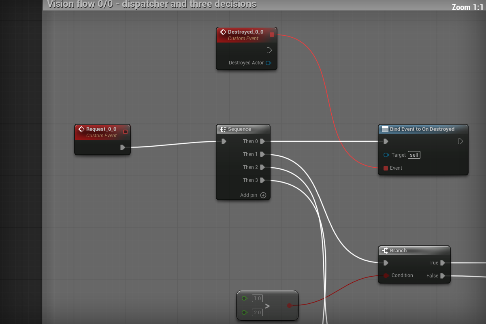

Check one execution wire
Preview then → execute using the two reader IDs. Check whether the preview lists a destination the source would replace.
An addon to stock Unreal MCP
Give your agent the Blueprint, widget, and input information it needs to build a feature and check it in Unreal.
Development preview
Windows · pinned Unreal 5.8.4 source build

From specification to an observed result
Start with an existing Pause and Settings menu. Describe the result before the agent changes the project.
Add Settings below Resume. Selecting Settings must open the existing Settings screen. Back must return to Pause with Settings focused. Keep Resume working.
Read the widgets, menu graphs, and input setup. Find the assets and existing navigation code.
Add the button and connect it to the screen-change logic. Check the new widget and graph connections.
Compile the changed Blueprints. Check each asset’s compiler result before starting play.
Send short inputs in Play In Editor. Check that Settings opens, Back returns to Pause, and focus returns to Settings.
The agent checks the screen, focus, and relevant log messages after each input. If input arrives but the screen does not change, the test fails.
Illustrative workflow. These steps combine supported tools. They are not a recorded passing test of this complete feature.
Follow the complete workflowTrace Request_0_0 through Sequence in this recorded Unreal fixture. Use each view to answer a different question about the same graph.

Find the Sequence’s exact node ID with NodeFind. Pass that ID to Capture in node mode to read the pin labels.
{
"toolset_name": "TurboMCP.TurboMCPLookToolset",
"tool_name": "LookTurboMCPCapture",
"arguments": {
"Asset": "<blueprint-object-path>",
"GraphName": "VisionEvents_0",
"Mode": "node",
"Target": "<sequence-node-id>",
"Size": "1200x800"
}
}The crop shows nearby pins. Some downstream nodes extend beyond the frame.
Preview then → execute using the two reader IDs. Check whether the preview lists a destination the source would replace.
Read the row struct, then preview Potion = Health=100. Check whether Potion already exists and which other fields stay as they are.
Find which control has focus in your running menu. Send a short input, then check the screen and focus again.
Open a tool to read its parameters and effects. Check your editor’s registered schema before calling it.
Some reads and previews execute project code or change editor state. Check the tool’s effects before invoking it.
Source declarations are not a live registration test or a release-acceptance result. View the source header.
TurboMCP registers its toolsets with Unreal's MCP server. The source installation uses the pinned engine and your project's editor build.
Plugins/TurboMCP into your project. Enable it and build the editor target.After connecting, check which TurboMCP toolsets Unreal exposes in this session.
{
"toolset_name": "TurboMCP.TurboMCPReadToolset",
"tool_name": "ReadTurboMCPToolIndex",
"arguments": {}
}Report a bug, improve a tool or propose a feature. Search existing issues, describe the task and result, then review your evidence before posting.
Use the reporting skill and report format to prepare a sanitized local draft.